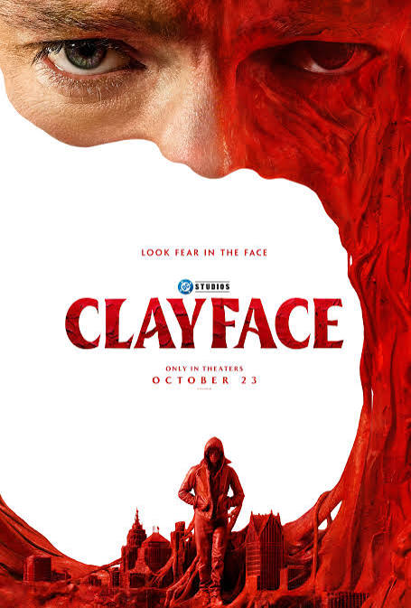

Clayface
Year: 2026 • Genre: Body Horror / Action
Clayface takes a different approach to the traditional comic book origin story by exploring the tragic transformation of one of Batman's most iconic villains. While the movie delivers entertaining body horror, impressive practical effects, and a phenomenal lead performance, it ultimately feels like a missed opportunity as a DCU installment.
Review
Date Watched: October 30, 2026
Where Watched: Theaters
Adaptation? Yes — Comic Book
Quick Hook (First Impression)
Normally, when watching a movie based on a comic book character, studios tend to focus on telling the origin story of a superhero and showing audiences how they became the characters we know today (i.e. Spider-Man, Blue Beetle, Captain America, etc.). However, we've also started seeing more origin stories centered around some of the darker and more sinister characters within comic book universes.
While a character like Venom has been portrayed more as an antihero rather than a traditional villain, Clayface takes a different approach by embracing its central character's villainous nature and showing us how actor Matt Hagen transforms into one of Batman's most recognizable enemies.
I'll admit that I've always favored the Marvel universe over DC, and that hasn't necessarily changed. However, I still appreciate the world of DC Comics, even if its movies haven't impressed me as consistently as Marvel's films. There are several DC movies that I genuinely enjoy, including Blue Beetle, The Dark Knight trilogy, and The Suicide Squad. Because of that, I always try to approach a new DC film with at least a little optimism.
After seeing Clayface in theaters, I can say that while I found the movie enjoyable, it ultimately felt like a missed opportunity, both as a standalone film and as an installment in the DC Universe.
Story / Concept
One thing I appreciated about this concept is that it allows the filmmakers to explore a different side of the comic book genre. Rather than delivering another traditional superhero movie, the film leans into body horror and the disturbing nature of Hagen's transformation.
There is an interesting story here about a man gradually losing his humanity, and I think that gives the movie a compelling foundation. Watching the transformation of someone who was once an ordinary actor into a monstrous villain gives the character a tragic element that makes his origin story particularly interesting.
Performances
One of the biggest positives of Clayface is Tom Rhys Harries' performance as Matt Hagen. His portrayal was phenomenal, particularly when it came to bringing the emotional weight of Hagen's tragic backstory to life.
What makes Hagen an interesting character is that his transformation isn't simply about becoming a monstrous shape-shifting villain. There's a tragedy behind his journey, and watching a man lose control of his own identity and humanity gives the character an emotional foundation that I appreciated.
Harries does a fantastic job portraying that downward spiral, making it easy to understand Hagen's circumstances even as he becomes something far more sinister.
Unfortunately, Hagen was really the only character I found myself genuinely invested in throughout the film. The supporting cast didn't leave much of an impression on me, and I struggled to develop any meaningful emotional connection with them.
This was particularly noticeable with Dr. Caitlyn Coor, played by Naomi Ackie. I wanted to become more invested in her character and understand her importance to Hagen's journey, but I never felt that connection. Outside of Hagen, most of the characters felt like they were simply there to move the story forward rather than contribute something particularly memorable.
Pacing / Flow
My biggest issue with Clayface comes down to its inconsistent pacing. The first act feels rushed, almost as if the movie is eager to get through the setup and move Hagen toward his transformation. The second act slows things down a little, giving certain moments more room to breathe, before the third act starts rushing through events again.
This uneven approach made it difficult for me to become fully immersed in the story. There were moments when I wanted the film to slow down and spend more time developing its characters and important plot points, especially considering how much emotional weight Hagen's transformation is supposed to carry.
Instead, some scenes felt like they were moving from one major event to another without giving the audience enough time to process what was happening. The problem isn't necessarily that the movie moves too quickly or too slowly, but that it struggles to find a consistent rhythm.
When a film is telling a tragic origin story about someone slowly losing his humanity, I think those emotional moments deserve more time to develop. A little more breathing room could have made Hagen's journey even more impactful and helped the supporting characters feel more fully realized.
Themes / Meaning
Another aspect I really enjoyed was the practical effects. Considering that Clayface is a character whose entire identity revolves around his ability to manipulate and reshape his body, the filmmakers had plenty of opportunities to get creative with the visual effects.
Some of my favorite moments came during the transformation sequences, where we get to see just how disturbing and unnatural Hagen's changing body can become. I especially enjoyed seeing his final form when he fully embraces his identity as Clayface. The design of the hulking monster was a great visual payoff, and it was easily one of the highlights of the movie for me.
My only real complaint is that I wish we had gotten more time with this version of the character. After spending so much of the movie building toward his transformation, I wanted to see more of what Clayface could do once he finally became the monster audiences recognize.
With a reported budget somewhere between $30–44 million, I can understand why the filmmakers may have had to be selective about how much they showed. Practical effects and creature work aren't necessarily cheap, especially when you're bringing a character like Clayface to life.
Still, considering this is a DCU film featuring one of Batman's most iconic villains, I wish the production had been given a little more room in the budget to explore the character's monstrous potential.
Speaking of DC, one thing that surprised me was just how disconnected this movie felt from the larger DC Universe. There are a few Easter eggs that longtime DC fans might recognize, but outside of those small details, the movie doesn't do much to establish itself as part of a world filled with superheroes and other recognizable characters.
In fact, unless you happen to notice the word "Gotham" on a building, you could almost forget that the story takes place in Batman's backyard. What's even crazier to me is that there aren't any meaningful references to the Caped Crusader throughout the film.
To me, that's a huge missed opportunity. I completely understand the filmmakers wanting to give Clayface his own movie and allow Matt Hagen's story to stand on its own without having Batman overshadow the main character. However, there's a difference between keeping Batman out of the spotlight and making it feel like he doesn't exist at all.
We're watching the origin story of one of Batman's most recognizable villains, so I found it strange that there wasn't even a small reference to the Dark Knight. Something as simple as a batarang, a news report mentioning Batman, or even a hint that the GCPD is aware of a masked vigilante investigating strange events in Gotham could have gone a long way.
It wouldn't have required Batman to make an appearance or taken anything away from Hagen's story. Instead, it could have helped establish that this character's transformation is happening within a much larger universe and potentially set up an interesting conflict for a future DCU installment.
Final Thoughts
Clayface tells a compelling story about one of Batman's most iconic villains, but inconsistent pacing, forgettable supporting characters, and missed opportunities within the DCU prevent it from reaching its full potential.
Tom Rhys Harries delivers a phenomenal performance as Matt Hagen, the practical effects are impressive, and the body horror elements provide some genuinely entertaining and memorable moments.
I appreciate that the filmmakers wanted to take a different approach to a comic book origin story by leaning into the horror elements rather than delivering another traditional superhero movie. In that regard, I think there is something interesting here.
Unfortunately, I walked away feeling more entertained by the body horror than impressed by the movie as a DCU installment. I wouldn't necessarily say I watched a great DC film, but I did watch a fun little body horror movie featuring one of Batman's most recognizable villains.
And while that's not exactly what I was hoping for, it's enough to make the experience enjoyable, even if I wanted a little more out of it.
Who is this for? Fans of body horror, practical creature effects, and comic book villain origin stories. It's also worth checking out for DC fans who want to see a different approach to the superhero genre.
Who should skip it? Viewers looking for a more traditional DC superhero movie or those expecting meaningful connections to Batman and the wider DC Universe may walk away disappointed.
One-Sentence Verdict: Clayface is an enjoyable body horror movie with a phenomenal lead performance and impressive practical effects, but inconsistent pacing and missed opportunities within the DCU prevent it from becoming something truly memorable.
What Worked
- Tom Rhys Harries' phenomenal performance as Matt Hagen.
- Practical effects and the disturbing transformation sequences.
- Clayface's final monstrous design.
- The tragic foundation behind Hagen's origin story.
- Taking a body horror approach to a comic book character.
What Didn't
- Forgettable supporting characters, particularly Dr. Caitlyn Coor.
- Inconsistent pacing throughout all three acts.
- Lack of meaningful connections to the wider DC Universe.
- No references to Batman despite telling the origin story of one of his iconic villains.
- Not enough screen time with Clayface in his final monstrous form.
Adaptation Notes
Faithful? Yeah
The film is based on the DC Comics character Clayface and focuses on Matt Hagen's transformation into the iconic villain.
Optional Gut Check
Rewatchable? Maybe
Would I recommend this casually to a friend? Yes
I'd love to hear your thoughts. Agree or disagree? Email me at ross@nobodycritics.com